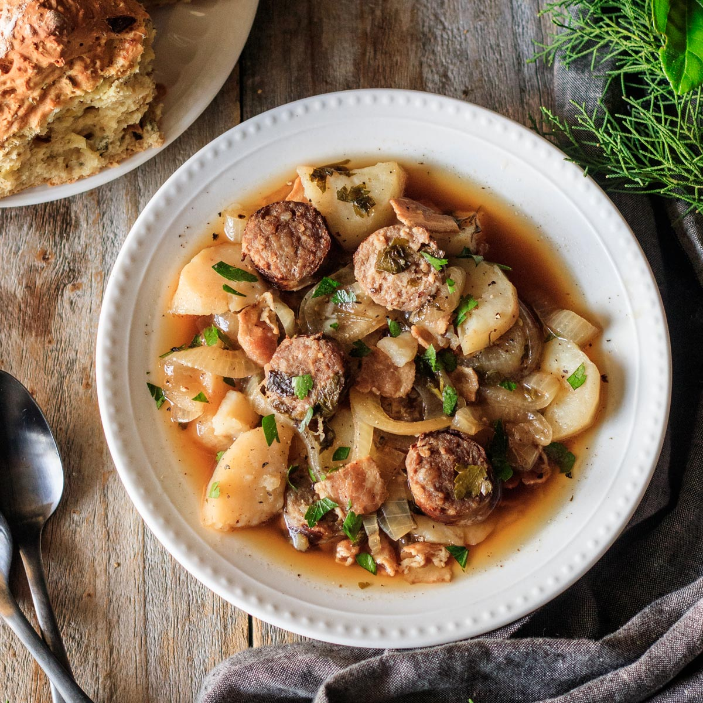

Dublin Coddle
Home Kitchen

Traditional Dublin Coddle
Dublin Coddle is a traditional Irish dish consisting of layers of sausages, bacon, potatoes and onions that are braised in broth to perfection. Cooked low and slow, this Dublin Coddle will make your home smell amazing! Make this authentic and rustic Irish recipe to celebrate St. Patrick’s Day.
This hearty winter dish dates back to the first great famine of Ireland, in the 1700s, and is particularly associated with Dublin, legend has it that devoted Irish wives would throw everything in the pot and go to bed, leaving the coddle simmering until their husbands would arrive home from a night drinking at the pub.
Ingredients
- 8 slices bacon, chopped into small pieces
- 1 pound high-quality pork sausages
- 3 tablespoons all-purpose flour
- 1 bottle Guinness beer
- 2 pounds potatoes, peeled and cut into bite-sized pieces
- 2 large onions, cut into slices
- 4 cloves garlic, minced
- 4 tablespoons fresh minced parsley
- 3 bay leaves
- 1 teaspoon dried thyme
- Fresh cracked black pepper
- 2 cups beef, ham, or chicken broth
Steps
- Preheat the oven to 300°F.
- Heat a large, oven-proof Dutch oven over high heat. Add in the bacon and cook until crisp, about five minutes. Remove the bacon to drain on paper towels. Leave the grease in the Dutch oven.
- Add the sausages in, a few at a time (don't crowd the pan), and cook on each side until just golden brown—no need to cook all the way through. Remove to a plate and continue with additional sausages. Remove to plate. When cool enough to handle. Slice into 1" pieces.
- Reduce the heat to low, and then whisk in the flour. Cook for 2 minutes, whisking constantly. Then remove from heat completely.
- Whisk in the bottle of Guinness.
- Place half of the potatoes in the gravy, followed by half of the onions, half of the garlic, half of the bacon, half of the sausages, half of the parsley, the bay leaves, the thyme, and black pepper. Repeat layers with the remaining ingredients.
- Pour the broth over the whole thing. Place lid on, and bake in preheated oven for at least 2 hours.